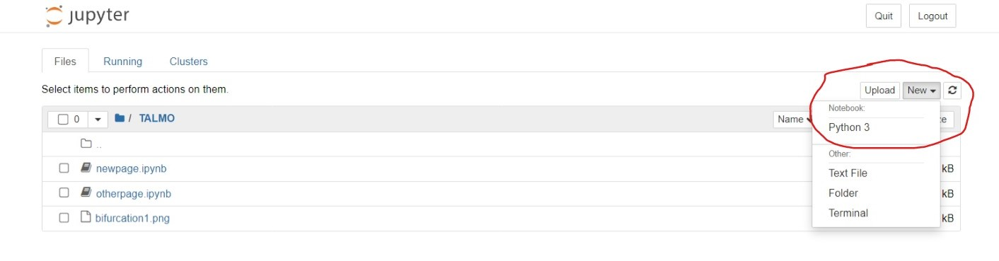
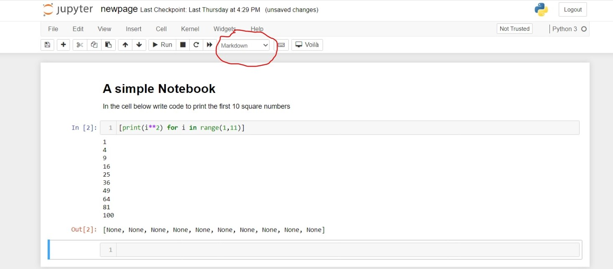

Writing content in Jupyter Notebook
Contents
Writing content in Jupyter Notebook¶
Getting started¶
If you are looking to produce your mathematics/statistics notes with Jupyter Notebook, there’s some chance you are already using it for your own research or teaching. These first sections are aimed at those completely new to Jupyter.
For those who may not have used it before, Jupyter Notebook can be downloaded for free, either on its own (https://jupyter.org/ if you already have Python installed separately) or as part of the Anaconda Python installation (https://www.anaconda.com/). When you open Jupyter Notebook, it launches inside a web browser and brings up a file directory (you cannot open existing Notebook files directly - you must launch the application first then find your file using the file directory). In the top-right of the page you will see a drop-down box saying ‘New’. Click this and then ‘Python 3’ and a new Notebook will appear. See the screenshot below.
Jupyter Notebook is based around cells. In each cell you can write a chunk of code and then run it, either by clicking Run in the top menu bar, or with the cursor inside a cell hitting Shift-Enter. What is particularly useful from the perspective of writing notes, is that you can also write formatted text using Markdown in a cell. To do this you have to select that cell to be Markdown - there is a drop-down menu along the top that says ‘Code’ by default, but can be changed to ‘Markdown’. Again, see the screenshot below.
This is a deliberate and important feature of Jupyter Notebook, as it means you can produce a well-documented report that includes code, output and detailed descriptions all in one file. I personally came across it while assisting in a maths undergraduate course on mathematical programming, as we could provide instructions to students and perhaps initial bits of code, and then have them complete work in their own copy of the Notebook.
Writing in Markdown¶
Markdown is a language for writing formatted output using plain text. On the whole it is pretty straightforward, but much of its standard formatting is different from LaTeX. However, one important area in which it is the same is writing equations. So familar commands to produce mathematical notation will work in exactly the same way. For example, if we write,
$$ \int^{\pi}_{-\pi}\sin(x)dx=0 $$
or
\begin{align}
\frac{dx}{dt} &= \alpha x^2 - \beta xy\\
\frac{dy}{dt} &= \beta xy - \gamma y
\end{align}
when we run the cell we will get back the equations we’d expect,
and
This means that if you have existing content written in LaTeX, the chances are you can copy and paste most of it into a Jupyter Notebook and get back out what you’d expect. Alternatively, if you are working from scratch you don’t have to worry about learning a whole new set of commands to type your mathematical notation.
As I said, however, there are differences. At the easier end, most simple formatting - itallics, bold, lists - I would say are somewhat easier using Markdown than LaTeX. For example, we can write,
We can write in *itallics* or in **bold**
* This is a bullet point
* This is another bullet point *with some itallics*
1. This is a numbered list
2. And we need a second one to make it a list I guess
and this will give us the output below.
We can write in itallics or in bold
This is a bullet point
This is another bullet point with some itallics
This is a numbered list
And we need a second one to make it a list I guess
If you are working off existing LaTeX then some judicious use of find-replace will help, though I won’t pretend it’s not a faff if you have really quite substantial notes to copy over.
Including figures¶
For figures, there is a standard command for including images in Markdown, but it provides little control over its details. Perhaps the better approach is to remember that our ultimate aim is to produce an HTML file. We can therefore use the HTML image tag, which allows us to include alt text (remember, this is about accessibility!) and image sizes, etc. The standard format for this is,
<img src="bifurcation1.png", alt="A bifurcation diagram (alt text really should be much more detailed than that)", width=400>
Other environments¶
More advanced environments, such as theorems or proofs, for example, are a little harder to replicate purely in Markdown. One option would be to use a blockquote surrounded by horizontal lines. This can be written as,
---
> **Theorem**: Whatever can go wrong, will go wrong.
---
which produces,
Theorem: Whatever can go wrong, will go wrong.
Much like figures, we could alternatively make use of the fact that we will eventually produce HTML output and use some more advanced features. Perhaps even better, if you end up using Jupyter Book, this provides a few nice default templates, including for theorems, proofs, etc. You can read more about these in the later section of this guide.